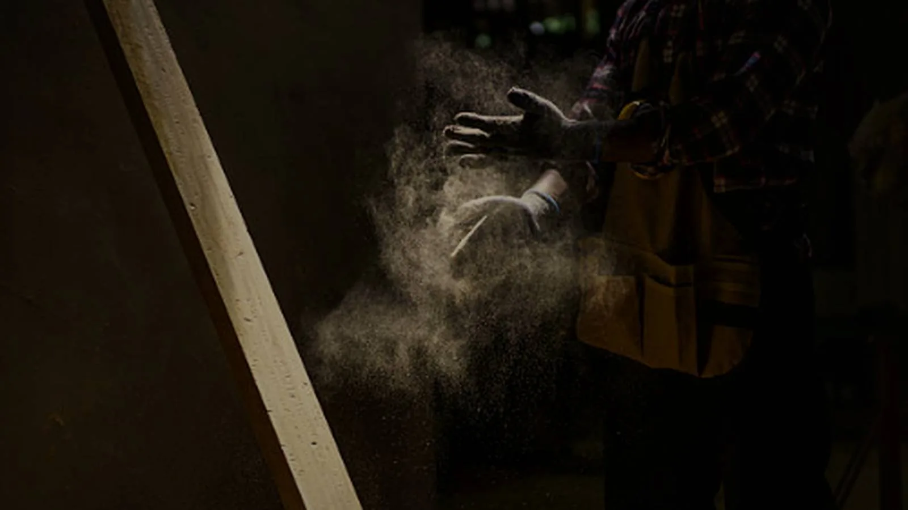
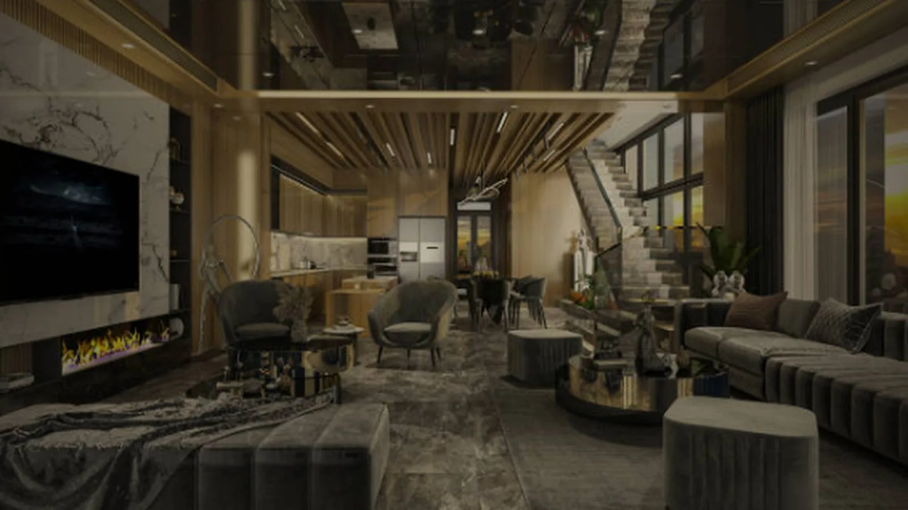
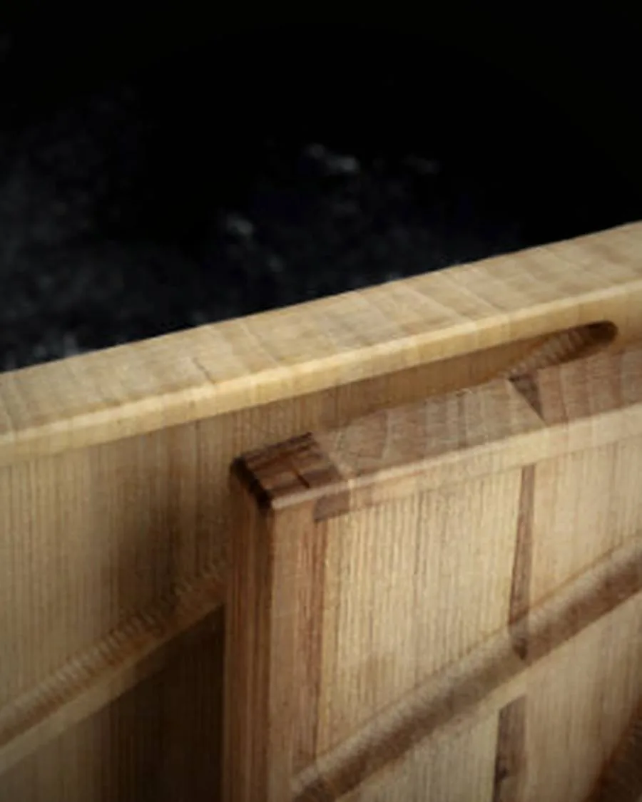
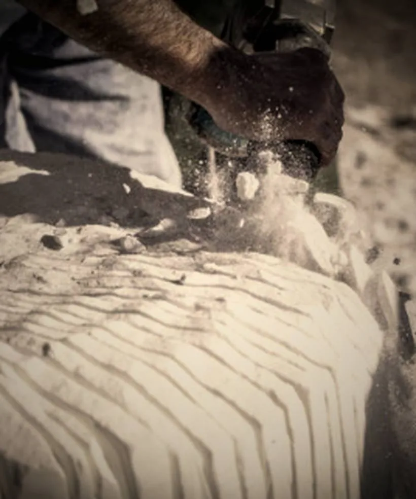
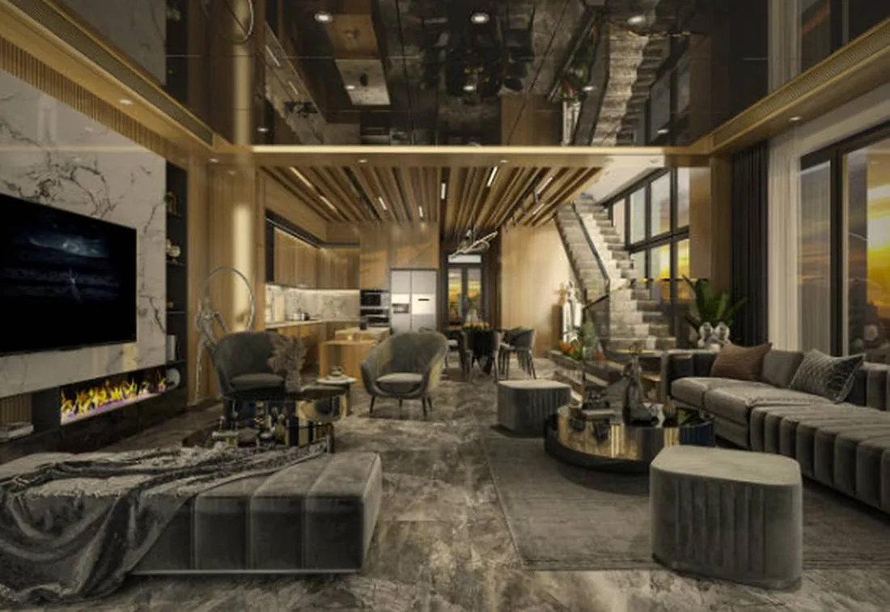
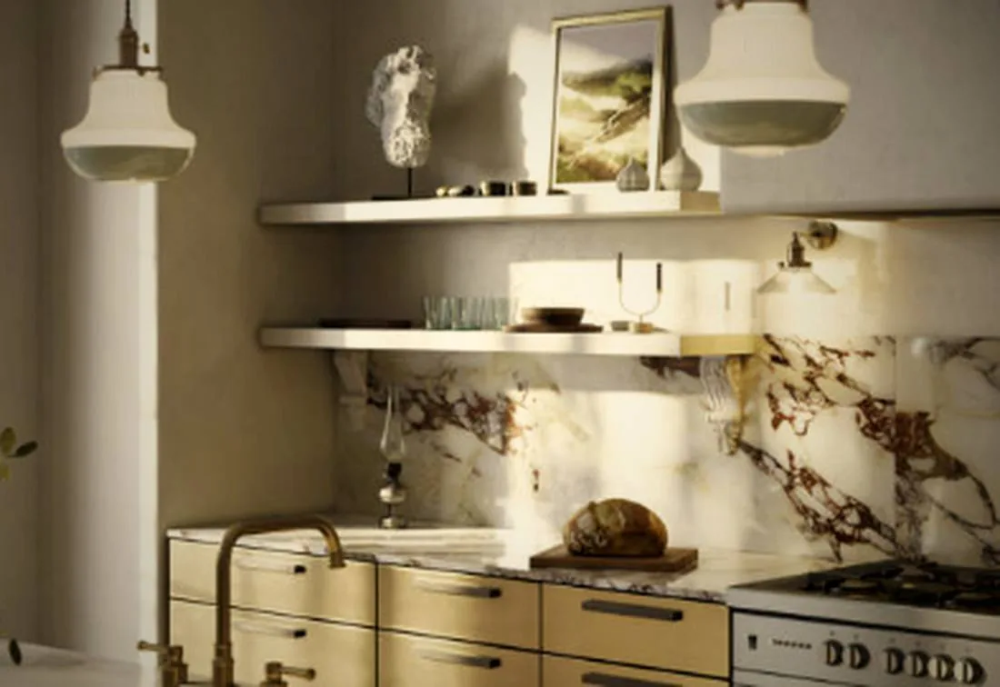
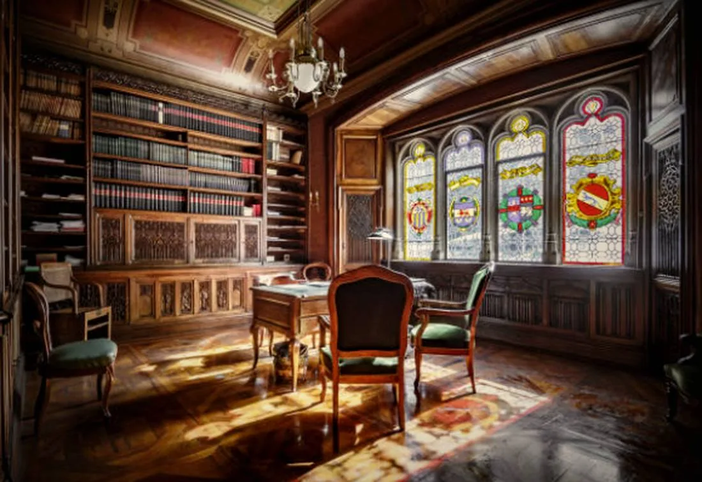
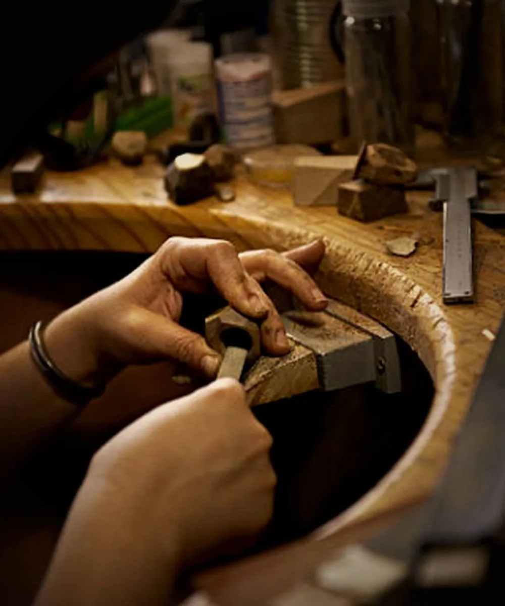

Les meilleurs artisans
du 13 sont débordés.
On ne les réserve pas.
On les connaît.
Nous ouvrons leur porte.
L'excellence artisanale,
orchestrée pour vous.
Nous confions vos projets aux artisans les plus rares du 13, puis nous coordonnons chaque intervention — du premier corps de métier à la livraison. Un seul interlocuteur, et une finition qui se remarque au premier coup d'œil.

RÉF. 01 — NOYERAssemblage à queue d'aronde · noyer massifCe que nous faisons
pour vous.
Les portes fermées.
Les meilleurs artisans du 13, y compris ceux qui ne prennent plus de nouveaux clients. Grâce à notre réseau, votre projet passe leur porte.
Le tri sur le volet.
Pas un annuaire. Une short-list éprouvée, chacun choisi pour son savoir-faire et sa fiabilité — rencontré, ses chantiers visités.
Un seul interlocuteur.
On planifie les interventions, on orchestre les corps de métier dans le bon ordre, on gère les rendez-vous. Vous nous parlez, à nous — pas dix numéros à rappeler.
Les meilleurs de la région sont débordés. Leur savoir-faire est si recherché qu'ils ne répondent plus aux nouvelles demandes — et c'est précisément ce qui fait leur valeur. On ne les réserve pas : on les connaît.
Notre métier, c'est d'ouvrir cette porte. Pour un chantier d'exception, à la hauteur de leur exigence, ils acceptent de faire une place. Vous obtenez une finition introuvable ailleurs ; l'artisan, un ouvrage qui l'honore. Et parce qu'un tel chantier se coordonne, nous en assurons l'administration de bout en bout — le bon corps de métier, au bon moment.
Le détail
qui change tout.
Ce que l'œil ne nomme pas mais reconnaît aussitôt : la justesse d'une arête, la profondeur d'une patine, la douceur d'un assemblage.
Les mains rares
ne courent pas les rues.
Un ébéniste dont les boiseries traversent les siècles. Un tailleur de pierre qui lit un mur comme une partition. Une poignée d'ateliers, dans tout le 13, dont le travail se transmet de propriété en propriété, sans une ligne de publicité.
Ils ne cherchent pas de clients. Ce sont les clients qui les cherchent — souvent en vain.
 RÉF. 03 — CHÊNEAtelier d’ébénisterie · le geste
RÉF. 03 — CHÊNEAtelier d’ébénisterie · le gesteNous avons leur confiance.
Des années à fréquenter ces ateliers, à visiter leurs chantiers, à comprendre ce qui les fait accepter — ou refuser — un projet. Cette relation ne s'achète pas ; elle se construit.
Quand nous présentons un chantier, ils savent qu'il en vaut la peine. C'est là toute la différence.

RÉF. 04 — PIERRETaille de pierre · à la mainDeux exigences
qui se reconnaissent.
Un maître d'ouvrage qui veut le meilleur, et l'artisan capable de le lui donner. Nous orchestrons leur rencontre, veillons au bon déroulé, et nous nous effaçons dès que la confiance est établie.
Chacun y gagne. Vous, une finition d'exception ; l'artisan, un chantier à sa mesure ; nous, la satisfaction d'avoir vu juste.
De votre projet à la livraison.
Un chantier d'exception se coordonne. Voici comment nous le menons de bout en bout — sans que vous ayez à courir après personne.
Sélection
Nous identifions, parmi les ateliers que nous connaissons, l'artisan rare qu'exige votre projet.
Planification
Nous bâtissons le planning corps de métier par corps de métier, autour de vos disponibilités et de la remise des clés.
Coordination
Nous convoquons chaque artisan au bon moment, gérons les imprévus et réajustons le planning en cas de retard.
Suivi en temps réel
Depuis votre espace personnel, vous suivez l'avancement du chantier et la date de livraison, tenue à jour en permanence.
Les savoir-faire d'exception du 13.
Regardez de plus près.
Un aperçu de ce que produisent les ateliers de notre réseau.

01 / RÉAL.Réception & escalier · pierre et ferronnerie
02 / RÉAL.Cuisine sur mesure · marbre & laiton
04 / RÉAL.Bibliothèque · boiseries sur mesureAperçu de réalisations. À terme, ce sont les vraies photos des chantiers de votre réseau qui prendront place ici.

RÉF. 06 — ATELIERAtelier · le savoir-faireOn ne rejoint pas notre réseau. On y est invité.
Nous cherchions un ébéniste capable de reprendre les boiseries d'une bastide du XVIIIᵉ. En trois jours, ils nous ont présenté l'homme qu'il nous fallait. Le résultat dépasse tout ce que nous espérions.
Un projet à la hauteur
de ces artisans ?
Présentez-nous votre chantier en quelques mots. Nous revenons vers vous sous 48 heures.